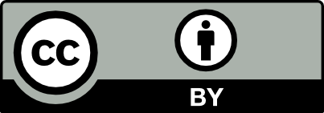

1 Introduction
Agile Software Development is now mainstream and as usual with mainstream there is so much marketing and buzzwords around it that it is not easy to understand what is really happening. There is so many people talking and writing about agile, but what is really happening? what are practitioners really doing?. Agile is a mindset and like any mindset is abstract and sometimes difficult to understand. So to have a usage measure we focus our study on practices since they are a concrete way to obtain evidence about the actual way software development is performed.
In the context of software development, practices can be categorized into technical and organizational. This categorization has been applied by researchers and practitioners, although it takes slightly different forms: Meyer uses technical and organizational/managerial [1] while Pantiuchina et al. use speed and quality [2]. A right balance between technical and organizational practices seems reasonable, given that technical practices support product quality and effectiveness, while organizational practices in general affect cost, schedule and team sustainability. Projects severely lacking in any of these two aspects are more likely to fail (Chow et al. identify engineering practices as one of the three main success factors in agile projects [3]). Furthermore, cost-effectiveness might probably depend heavily on a balanced approach taking into account costs, quality and productivity. Popular approaches like CMMI and Scrum promote adoption paths that start with organizational practices. CMMI Level 2 focuses on project management, while Level 3 brings in more technical process areas, such as Product integration, Technical solution, Validation and Verification [4]. Scrum does not include any technical practices, but Scrum teams are encouraged to add technical practices as they evolve their process. This approach makes sense from an organic maturation perspective, but risks incomplete implementations. We believe that is why some technical practices, like Software Configuration Management, are considered hygienic and non-negotiable by mature teams (in CMMI SCM is a Level 2 Process Area).
Some authors suggest that in companies that claim to be agile, organizational practices are more used than technical practices. In 2009 Martin Fowler coined the term Flaccid Scrum [5] to refer to those projects that embrace Scrum but without paying attention to technical practices, which after a while turns their code base into a mess.
More recently Joshua Kerievsky described a similar situation: adoption of agile practices leaving out technical practices [6]. Our motivation for this study is based on our own experience as practitioners and the preceding discussions about the perception that technical practices are not widely used.
The overall research questions that guide our study are:By usage rate we mean the number of projects that make regular use of a practice over the total number of projects. We focused on projects developed by practitioners in the Latin-American Agile community, because our own experiences as members of this community motivated us to better understand it, and because it allowed us to reach industry practitioners.
- Q1: What is the usage rate of practices in actual software development projects?
- Q2: Is there any difference between the usage rate of technical and organizational practices?
2 Related Work
There are several studies focused on agile practices and their actual adoption in industry, and studies that focus on methods but also assess practices. We explicitly exclude studies dealing with the specifics of each practice, since that is beyond the scope of this work. The advantage of practice-focused research is that it allows finer grained study of actual software development processes beyond the overall process framework or method. For example, the HELENA Survey is an initiative that focuses on hybrid development methods, i.e. it mixes agile and non-agile practices, and as such, it covers a wide spectrum of practices, from full agile to traditional approaches [7, 8].
Diebold et al. have studied what practitioners vary when using Scrum [9], their results show that very few, only one out of ten of the companies studied, actually perform most of the practices that make up Scrum “by the book”. This resonates with our experience and results, since Scrum is a simple framework with few practices and still not all its practices have the same level of adoption. The authors note that the daily scrums are more widely used than retrospectives.
There are several studies on regional agile communities of practice. A study of the Spanish agile community, also conducted during an Open Space agile conference, produced results very similar to our own, and it also included a comparison with the state of practice of several European organizations [10]. The study involved approximately 100 participants.
In Brazil, a more general study on the historical evolution of the agile community included both academia and industry, but did not analyze specific practices [11]. Also in Brazil, Melo et al. have published a technical report with the results of a survey on agile methods that includes information on practices usage, but the list of practices covered is different from ours [12].
Kropp et al. [13] have conducted the Swiss Agile Survey for several years, and their results show that agile practice adoption grows with agile experience, which is consistent with our own results [14, 15].
Industry surveys also show significant differences in practice adoption [16–18]. For example, Ambler’s online survey, based on 123 online responses, shows TDD as the hardest to implement agile practice [16], which is consistent with its very low level of adoption in our studies.
Several studies have also focused on practice categorization. Bertrand Meyer categorizes agile practices in technical and organizational in his extensive review of agile [1]. Pantiuchina et al. distinguish between speed and quality practices, roughly matching our categorization of organizational and technical practices [2]. Kropp et al. distinguish between technical and collaborative practices (they also differentiate a few advanced practices, like limited work in progress and BDD) [13]. Their categorization also roughly matches our own, with their collaborative category corresponding to our organizational one.
Some practices are consistently categorized across studies, but some are categorized differently by different researchers. For example, Meyer considers Continuous Integration to be organizational, while we regard it as technical, same as Kropp et al. On the other hand, Kropp et al. consider the Burndown chart to be a technical practice, while we would consider it organizational. In general, there is no explicit criteria set forth by authors for practice categorization (Table 1).
Table 1.
Practice categorization overview.
Categories | Meyer | Kropp | Pantiuchina |
|---|---|---|---|
Technical | Technical | Technical | Quality |
Non-technical | Organizational (Managerial) | Collaborative | Speed |
Considering empirical studies on success factors, Van Kelle et al. found that the level of practice adoption, value congruence and transformational leadership were the most significant predictors of project success [19]. Chow et al. have identified agile software engineering techniques, delivery strategy and team capability as the top three critical success factors [3]. Aldahmash et al. have used technical and organizational (and also people and process) as categories for critical success factors in agile software development [20].
3 Methodology
In this section we present the methodology applied, the study description, our working definition of the technical and organizational categories, and the criteria applied to categorize practices.
3.1 Technical and Organizational Categorization
As we have discussed, the distinction between technical and organizational practices and the hypothesis of their different rates of adoption were the initial drivers of our research.
To classify practices, we have applied the following criterion: is a given practice specific to software projects or could it potentially be used in other contexts? Accordingly, we can distinguish between those practices that are specific to software projects, regarded as “technical practices”, and those that are not specific to software projects and that can be used in other kinds of projects, regarded as “organizational practices”. We called the latter group “organizational” because they deal with how people organize and coordinate their activities. By applying these criteria, the following classification emerged:In most cases, the criterion allowed us to assign a category without ambiguity, but in the case of Collective Ownership, also known as Collective Code Ownership, the reference to “code” presented a challenge. It deals with code ownership (i.e. who can modify which parts of the code), not with the actual modification of the code. The purpose of the practice is to reduce the concentration of knowledge about certain components, thus making the team more robust and less dependent on any single person (a popular informal metric, the team’s “truck number” or “truck factor” highlights this purpose). This led us to a corollary criterion: when in doubt, focus on the practice’s purpose over form. Table 2 shows the rationale for our categorization.
- Technical Practices: Continuous Integration, Emergent Design, Pair Programming, Test Automation and Test-Driven Development.
- Organizational Practices: Frequent Release, Iterative Process, Retrospectives, Collective Ownership and Self-Organization.
Table 2.
Practice categorization and rationale.
Practice | Category | Rationale |
|---|---|---|
Continuous integration | Tech | Continuously integrated software version is verified automatically, by tests and static analysis |
Emergent design | Tech | Design decisions about the product are software specific |
Pair programming | Tech | Programmers write and review software in pairs with the purpose of improving code quality and shared knowledge |
Test automation | Tech | Automated tests are software created to verify other software under test |
Test-driven development | Tech | Is a very precise method for developing software |
Collective ownership | Org | Determines that any developer may modify any part of the code base, promoting team robustness. The goal is to ensure that no one person becomes a bottleneck for changes |
Frequent release | Org | Completed work is frequently delivered to end users to obtain feedback and maximize value |
Iterative process | Org | The final product is created by successive refinements |
Retrospectives | Org | The team meets periodically with the purpose of reflecting and committing to improving the process |
Self-organization | Org | Team members are responsible for assigning themselves tasks and managing their process |
3.2 Study Description
We organized our study in three stages. In each stage we followed the same methodology, that is: we identified a set of practices to study, we designed a questionnaire to survey practices’ usage and we ran the survey in a conference organized by the agile community. In each stage we extended the number of practices under study and based on that we updated the questionnaire to include new questions and also the feedback obtained in the previous stage.
We focused our study on core agile practices. To identify those practices, we considered 4 main sources: the agile manifesto [21], the book Agile! by Bertrand Meyer [1], the work of Alistair Cockburn [22] and our own experience. Alistair Cockburn is one of the authors of the agile manifesto and is very involved in the agile community. On the other hand, Meyer is a well-known academic and engineer with an extensive experience far beyond agile. We consider this mix of sources a good balance in order to develop an objective analysis.
In Stage 1 we selected six practices: Continuous Integration, Frequent Release, Iterative Process, Retrospectives, Test Automation and Test-Driven Development.
In Stage 2 we extended the list of practices to eight by adding: Coding Standards and Self-Organization.
Finally, in Stage 3 we extended the list to ten practices: we added Pair-Programming, Emergent Design and we removed Coding Standards because we consider it to be a very common practice nowadays even beyond agile contexts and we added Collective Ownership, which we consider a more significant practice and more aligned with agile principles like shared responsibility and self-organization.
In this article we present the results of the final and third stage of our study. In this stage we ran our survey in the context of Ágiles 2017, the Latin-American Agile Conference [23]. Table 3 shows the contextual information of each stage of our study.
Table 3.
Comparison of the 3 stages of the study.
Property | Stage 1 | Stage 2 | Stage 3 |
|---|---|---|---|
Conference | Agile Open Camp 2016 | Agile Open Camp 2017 | Ágiles 2017 |
Location | Bariloche, Argentina | Cajón del Maipo, Chile | Santiago de Chile, Chile |
Data points collected after depuration | 44 | 49 | 107 |
Date | March 2016 | May 2017 | October 2017 |
Participants in the Conference | 98 | 79 | ~800 |
Number of practices under study | 6 | 8 | 10 |
In every case we ran the survey in person, that is: we attended the conference and asked each person to complete the survey. When asking someone to complete the survey we explained that all answers should be based on one project that met that following criteria:We implemented the questionnaire simultaneously in paper and online (using Google forms) allowing the respondents to pick the format they preferred. In order to simplify the processing of the answers, once the conference was over we loaded all the answers through the online questionnaire. Once we had all the answers in the online questionnaire we exported them to a spreadsheet to continue with the data analysis.
- The project should be representative of the organization
- It should be a project in which the person had been actively involved
- It should be a recent project, that means the project should have been completed within the past year
In this third stage we distributed 150 paper copies of the questionnaire, many of which we waited around for people to complete. We obtained 80 responses out of these paper questionnaires, 2 of which were incomplete and were excluded. We also promoted around the conference a link to the online questionnaire. We obtained only 31 online responses, but 2 of them were discarded when we confirmed they belonged to duplicated projects. The resulting total number of valid responses was 107.
In all cases the questionnaire was divided into 2 main sections: the first one targeting demographic information and the second one targeting practices. For each practice under study we included 2 questions: a direct question and a validation question.
4 Results and Findings
In this section we present the study results and relevant findings.
4.1 Demographics
In Fig. 3 we can observe that there is a balanced mix of technical and non-technical people. We consider technical roles to be those of developer, architect and tester. We consider non-technical roles to be those of product owner, scrum master, agile coach, project leader, analyst and manager.
Fig. 3.
Roles of respondents
Figure 4 shows personal and organizational experience using agile. It is worth mentioning that over 40% of respondents belong to organizations with more than 3 years of experience with agile while over 50% belong to organizations with less than 3 years. Regarding personal experience, 50.4% of respondents report more than 3 years of experience with agile. The coincidence between personal and organizational experience suggests that many respondents were motivated change agents (they attended an agile conference) and promoted agile in their organizations from the beginning.
Fig. 4.
Experience using agile
For project characteristics, Figs. 5 and 6 show team size and project duration information, in both cases the responses are varied and most of them are consistent with standard agile recommendations.
Fig. 5.
Team size
Fig. 6.
Project duration
As sources for their agile knowledge, most respondents (86%) report to have learned about agile on their own, 63% report to have learned in private courses, and only 15% report to have learned about agile as part of their formal education. This question was a multiple-option one, that is why the total exceeds 100%.
Respondents reside in Chile (48.6%) followed by Argentina (17.8%), Colombia (12.1%), Peru (8.4%), Ecuador (4.7%), México (3.7%), Uruguay (2.8) and others (1.9%).
Regarding the reference method, Scrum is the most used one (60%), followed by Scrum in combination with Extreme Programming (17.8%), Kanban (9.3%), Extreme Programming (2.8%) and others combinations (10.1%).
4.2 Ranking of Practices
Table 4 presents the ranking of practice usage. There are four practices with a usage rate over 60% and all of them are organizational practices. At the same time, the technical practice with higher usage rate is Test Automation with 60%. All other technical practices have a usage rate below 50%.
Table 4.
Raw ranking of practice usage.
Practice | % usage | Category |
|---|---|---|
Iterative process | 83 (89/107) | Organizational |
Frequent release | 83 (89/107) | Organizational |
Retrospectives | 71 (76/107) | Organizational |
Self-organization | 63 (67/107) | Organizational |
Test automation | 60 (64/107) | Technical |
Emergent design | 44 (47/107) | Technical |
Continuous integration | 38 (40/107) | Technical |
Collective ownership | 38 (40/107) | Organizational |
Pair programming | 35 (37/107) | Technical |
Test-driven development | 20 (21/107) | Technical |
When doing the calculation to create the ranking of practice usage we found interesting situations worth mentioning here:
- Test-Driven Development is the least used practice with just 20%, but there is an additional 28% of respondents that reported that “someone in their teams does Test-Driven Development”. We didn’t consider these answers when calculating the ranking because our unit of study is the project and having someone in the project practicing Test-Driven Development is not enough for us to consider Test-Driven Development a project practice.
- Iterative process is one of the top practices in our ranking with 83% of usage. In most cases (74.8%) the iteration length is 2 weeks.
- Test Automation is used by 60% of respondents but it is interesting to note that there is an additional 22% of respondents that reported to have outdated automated tests. That is: they have automated tests that are rarely updated when the features under test are changed. We didn’t consider these cases for the calculation of the ranking because outdated tests do not add value.
- Collective Ownership is used by 38% of respondents, but we found that an additional 28% answered “No” or “Don’t know/Don’t answer” when asked “Does your team use the Collective Ownership practice?”. At the same time that same group reported that any team member was able to modify any part of the code of the project, which is the core idea of the Collective Ownership practice. This situation leads us to think that this portion of respondents may be using the practice even though they do not know it by name. This additional 28% would round the total usage of Collective Ownership to 66% which would position this practice in the top section of the ranking together with the rest of the organizational practices.
- Retrospectives are used by 71% of respondents, but an additional 12% answered that they performed retrospectives “At the end of each project phase”. Given that a phase can be an arbitrary long period, we cannot establish cadence so we did not consider these answers as following the standard practice. It is interesting that including these answers would rank Retrospectives at 83%, the same usage rate as the top ranked practices, Iterative Process and Frequent Release.
4.3 Quartile Analysis
The average number of practices used when considering the whole sample is 5.5, but when performing a drill-down analysis considering the different quartiles we observed some interesting findings. The higher the number of practices used, the more balanced the relationship between technical and organizational ones. In the first quartile this relationship is 1 to 4.4, that is, 1 technical practice is used every 4 organizational practices. The same relationship decreases to 1.2 in the fourth quartile (Table 5).
Table 5.
Quartile analysis.
Quartile | Avg practices used | Avg org practices used | Avg tech practices used | Org/tech practices used |
|---|---|---|---|---|
1 | 2.9 | 2.6 | 0.59 | 4.41 |
2 | 4.7 | 3.4 | 1.2 | 2.83 |
3 | 6.0 | 3.7 | 2.3 | 1.61 |
4 | 8.3 | 4.5 | 3.7 | 1.22 |
4.4 Factors Influencing Practice Adoption
In order to understand the factors influencing the adoption of practices we consider 4 items: organizational experience using agile, team size, project duration and reference methods used.
We didn’t observe any relationship when analyzing the number of practices used and the team size and project duration.
We did find a possible relationship between the count of practices in use and the organizational experience. As shown in Table 6 the count of practices tends to increase with the organizational experience with Agile. This result is consistent with some other studies [13, 14].
Table 6.
Average practice usage vs organizational agile experience.
Organizational experience using agile | Average practices used |
|---|---|
Less than 1 year | 4.4 |
Between 1 and 3 years | 5.1 |
Between 3 and 10 years | 6.0 |
More than 10 years | 7.0 |
We also found a possible relationship between the count of practices and the reference method used. Those projects based on Scrum in combination with XP use in average 6.5 practices while those using just Scrum, use 5. This situation can be explained because of the set of practices under study and the focus of each method. Scrum is a purely organizational process framework, whereas XP is a balanced technical/organizational method. Also, in our set of practices, 4 out of 10 (all organizational) practices are described in Scrum, while 9 out of 10 practices are described in XP.
When analyzing the respondents using Test-Driven Development, the least used practice, we see that the average number of practices is 7.5. At the same time, when doing the same analysis for Frequent Release and Iterative Process, the most used practices, we see that the average number of practices are 5.7 and 5.8 respectively. This situation suggests that Test-Driven Development could be considered a “late adoption practice” while Frequent Release and Iterative Process could be considered as “early adoption practices”. Another possible interpretation could be that Frequent Release and Iterative Process represent a better benefit/cost relation than Test-Driven Development. Frequent Release and Iterative Process are easier to implement than Test-Driven Development and at the same time are more visible and with greater/direct impact than Test-Driven Development.
5 Threats to Validity
Our study of the Latin-American Agile Community is based on a survey filled by practitioners that attended a conference, it is the most important conference of the community but entrance is open so the attendants may not be strict representatives of the community.
The gathered information is based on the perception of the respondents about the projects they were involved in.
The sample was not random, we asked attendants to complete the survey in person in the opening of some sessions.
From a regional perspective we lack data points covering the Brazilian community.
The categorization has been performed by other authors in the past with different results, that is, there is no agreed upon criteria for practice categorization.
6 Conclusions and Future Work
Organizational practices show a much higher rate of usage than technical practices. This situation has been confirmed in the three stages of our study [14, 15]. Also, as the number of used practices increases, the relationship between technical and organizational practice usage becomes more balanced.
The number of practices used is a direct function of organization experience. At the same time the difference between the technical and organizational practices decreases with organization experience. Team size and project duration seem to have no effect. This is consistent with the generalized community perception that agile, although apparently simple at first sight and appealing for many organizations, requires long term commitment to improvement.
In future work we will explore the reasons for this difference in the usage rate of technical vs organizational practices. We suspect there may be some factors related to formal education since the percentage of respondents with formal agile education is very low (15%). We also tend to see technical practices ignored in agile training sought by customers and adoption programs in industry. We recommend more balanced approaches, with simpler technical practices like continuous integration as good candidates for initial adoption.
This research is conducted as part of a larger research project on process and practice usability. We consider processes and practices as tools that people use to organize and define their activities, and usability characterizes good interactions between people and their tools. Future research could analyze if usability factors may be influencing the rate of usage for each practice [24].
This study has focused on core/traditional agile practices and it could be interesting to study if the findings of this work apply also to newer practices like continuous delivery and specification by example.

Open Access This chapter is licensed under the terms of the Creative Commons Attribution 4.0 International License (http://creativecommons.org/licenses/by/4.0/), which permits use, sharing, adaptation, distribution and reproduction in any medium or format, as long as you give appropriate credit to the original author(s) and the source, provide a link to the Creative Commons license and indicate if changes were made.
The images or other third party material in this book are included in the book's Creative Commons license, unless indicated otherwise in a credit line to the material. If material is not included in the book's Creative Commons license and your intended use is not permitted by statutory regulation or exceeds the permitted use, you will need to obtain permission directly from the copyright holder.
References
1.
Meyer, B.: Agile!: The Good, the Hype and the Ugly. Springer, New York (2014). https://doi.org/10.1007/978-3-319-05155-0Crossref
2.
Pantiuchina, J., Mondini, M., Khanna, D., Wang, X., Abrahamsson, P.: Are software startups applying agile practices? The state of the practice from a large survey. In: Baumeister, H., Lichter, H., Riebisch, M. (eds.) XP 2017. LNBIP, vol. 283, pp. 167–183. Springer, Cham (2017). https://doi.org/10.1007/978-3-319-57633-6_11Crossref
3.
Chow, T., Cao, D.B.: A survey study of critical success factors in agile software projects. J. Syst. Softw. 81(6), 961–971 (2008). https://doi.org/10.1016/j.jss.2007.08.020Crossref
4.
Chrissis, M.B., Konrad, M., Shrum, S.: CMMI® for Development, Version 1.3. Addison-Wesley Professional (2011)
5.
Fowler, M.: Flaccid Scrum. https://martinfowler.com/bliki/FlaccidScrum.html. Accessed 18 Jan 2018
6.
Kerievsky, J.: Stop Calling them Technical Practices. https://www.linkedin.com/pulse/stop-calling-them-technical-practices-joshua-kerievsky/?published=t. Accessed 18 Jan 2018
7.
Kuhrmann, M., Münch, J., Diebold, P., Linssen, O., Prause, C.: On the use of hybrid development approaches in software and systems development. In: Proceedings of the Annual Special Interest Group Meeting Projektmanagement und Vorgehensmodelle (PVM) Lecture Notes in Informatics (LNI), vol. 263 (2016)
8.
Paez, N., Fontdevila, D., Oliveros, A.: HELENA study: Initial observations of software development practices in Argentina. In: Felderer, M., Méndez Fernández, D., Turhan, B., Kalinowski, M., Sarro, F., Winkler, D. (eds.) PROFES 2017. LNCS, vol. 10611, pp. 443–449. Springer, Cham (2017). https://doi.org/10.1007/978-3-319-69926-4_34Crossref
9.
Diebold, P., Ostberg, J.-P., Wagner, S., Zendler, U.: What do practitioners vary in using Scrum? In: Lassenius, C., Dingsøyr, T., Paasivaara, M. (eds.) XP 2015. LNBIP, vol. 212, pp. 40–51. Springer, Cham (2015). https://doi.org/10.1007/978-3-319-18612-2_4Crossref
10.
Rodriguez, P., Musat Salvador, D., Yagüe Panadero, A., Turhan, B., Rohunnen, A., Kuvaja, P., Oivo, M.: Adopción de Metodologías Ágiles: un estudio comparativo entre España y Europa. Revista Española en Innovación, Calidad e Ingeniería del Software 6(4), 6–28 (2010). ISSN 1885-4486
11.
Melo, O., Santos, C.V., Katayama, E.: The evolution of agile software development in Brazil. J. Braz. Comput. Soc. 19(4), 523–552 (2013)Crossref
12.
Melo, O., Santos, C.V., Corbucci, H., Katayama, E., Goldman, A., Kon, F.: Métodos ágeis no Brasil: estado da prática em times e organizações. Relatório Técnico RT-MAC-2012-03. Departamento de Ciência da Computação. IME-USP, May 2012. http://www.agilcoop.org.br/files/metodos_ageis_brasil_estado_da_pratica_em_times_e_organizacoes.pdf. Accessed 12 Mar 2018
13.
Kropp, M., Meier, A., Biddle, R.: Agile practices, collaboration and experience. In: Abrahamsson, P., Jedlitschka, A., Nguyen Duc, A., Felderer, M., Amasaki, S., Mikkonen, T. (eds.) PROFES 2016. LNCS, vol. 10027, pp. 416–431. Springer, Cham (2016). https://doi.org/10.1007/978-3-319-49094-6_28Crossref
14.
Paez, N., Fontdevila, D., Oliveros, A.: Characterizing technical and organizational practices in the Agile Community. In: Proceedings of CONAIISI, Salta, Argentina, (2016)
15.
Paez, N., Gainey, F., Oliveros, A., Fontdevila, D.: An empirical study on the usage of technical and organizational practices in the Agile Community. In: Proceedings of CONAIISI, Santa Fe, Argentina (2017)
16.
Ambler, S.: Agile Practices Survey Results, July 2009. http://www.ambysoft.com/surveys/practices2009.html. Accessed 19 Jan 2018
17.
Version One: State of Agile Development Survey, Version One (2016)
18.
Scrum Alliance: The 2015 State of Scrum Report, Scrum Alliance (2015)
19.
Van Kelle, E., Visser, J., Plaat, A., Van Der Wijst, P.: An empirical study into social success factors for agile software development. In: Proceedings of the 8th International Workshop on Cooperative and Human Aspects of Software Engineering, CHASE 2015, pp. 77–80 (2015)
20.
Aldahmash, A., Gravell, A.M., Howard, Y.: A review on the critical success factors of agile software development. In: Stolfa, J., Stolfa, S., O’Connor, R.V., Messnarz, R. (eds.) EuroSPI 2017. CCIS, vol. 748, pp. 504–512. Springer, Cham (2017). https://doi.org/10.1007/978-3-319-64218-5_41Crossref
21.
Beck, K., et al.: Manifesto for Agile Software Development (2001). http://agilemanifesto.org/
22.
Cockburn, A.: Crystal Clear: A Human-Powered Methodology for Small Teams. Addison-Wesley Professional, Boston (2004)
23.
Ágiles Conference Homepage. http://www.agiles.org/agiles-20xx. Accessed 19 Jan 2018
24.
Fontdevila, D., Genero, M., Oliveros, A.: Towards a usability model for software development process and practice. In: Felderer, M., Méndez Fernández, D., Turhan, B., Kalinowski, M., Sarro, F., Winkler, D. (eds.) PROFES 2017. LNCS, vol. 10611, pp. 137–145. Springer, Cham (2017). https://doi.org/10.1007/978-3-319-69926-4_11Crossref